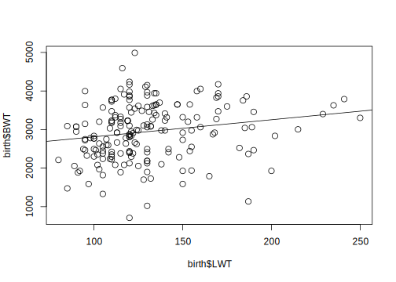

Dataset: birth
The dataset birth records 189 birth weights from Massachusetts, USA, and some additional variables. The variables are,
| Var | Description |
|---|---|
LOW |
Equals YES if birth weight is below 2500g and NO otherwise. |
AGE |
Age of the mother in years. |
LWT |
Weight in pounds of mother. |
SMK |
YES if mother smokes and NO otherwise. |
BWT |
Birth weight in g (RESPONSE). |
The data appears in fronter as birth.rdata. Download the data into your STAT340 course folder and load the data set in RStudio.
Overview of data
- Take a look at the top 10 rows of the data using the
head()function
head(birth, n = 10) LOW AGE LWT SMK BWT
1 YES 28 120 YES 709
2 YES 29 130 NO 1021
3 YES 34 187 YES 1135
4 YES 25 105 NO 1330
5 YES 25 85 NO 1474
6 YES 27 150 NO 1588
7 YES 23 97 NO 1588
8 YES 24 128 NO 1701
9 YES 24 132 NO 1729
10 YES 21 165 YES 1790- Use the
summary()function to get a short summary of the variables.
summary(birth) LOW AGE LWT SMK BWT
NO :130 Min. :14.0 Min. : 80 NO :115 Min. : 709
YES: 59 1st Qu.:19.0 1st Qu.:110 YES: 74 1st Qu.:2414
Median :23.0 Median :121 Median :2977
Mean :23.2 Mean :130 Mean :2945
3rd Qu.:26.0 3rd Qu.:140 3rd Qu.:3475
Max. :45.0 Max. :250 Max. :4990 - What is the proportion of smoking mothers in the data set?
The proportion of smoking mother is 0.39
- What is the average age of a mother giving birth?
The average age of mother giving birth is 23.2 years.
- What is the average birth weight of children from non-smoking and smoking mothers?
tapply(birth$BWT, INDEX = birth$SMK, FUN = mean) NO YES
3055 2773 The function returns the mean birth weight for children of non-smoking and smoking mothers.
- What is the standard deviation of birth weight of children from non-smoking and smoking mothers?
tapply(birth$BWT, INDEX = birth$SMK, FUN = sd) NO YES
752 660 The sd() function computes the sample standard deviation of a vector of observations.
Linear Regression
Run a simple linear regression model with BWT as response and LWT as predictor, like this,
birth1 <- lm(BWT ~ LWT, data = birth)
summary(birth1)
Call:
lm(formula = BWT ~ LWT, data = birth)
Residuals:
Min 1Q Median 3Q Max
-2192.2 -503.6 -3.9 508.3 2075.5
Coefficients:
Estimate Std. Error t value Pr(>|t|)
(Intercept) 2369.67 228.43 10.37 <2e-16 ***
LWT 4.43 1.71 2.59 0.01 *
---
Signif. codes: 0 '***' 0.001 '**' 0.01 '*' 0.05 '.' 0.1 ' ' 1
s: 718 on 187 degrees of freedom
Multiple R-squared: 0.0345,
Adjusted R-squared: 0.0294
F-statistic: 6.69 on 1 and 187 DF, p-value: 0.0105 Here, the regression model is,
\[\text{BWT} = \beta_0 + \beta_1 \text{LWT} + \epsilon\]
where \(\epsilon \sim N(0, \sigma^2)\)
Test the significance of LWT on BWT with a 5% test level and at a 1% level
What is the hypothesis you are testing?
The hypothesis for testing the significance of LWT on BWT is, \[ H_0: \beta_1 = 0 \text{ vs } H_1: \beta_1 \ne 0\]
- What is the conclusion?
The \(p\)-value corresponding to \(\beta_1\) is less than 0.05 but greater than 0.01. So, at 5% test level, LWT is significant while at 1% test level, it is not significant.
- Find the R-squared. Do you think the model fits the data well?
The r-squared (\(R^2\)) for the model is 0.03, this shows that only 3% of variation present in birth weight (BWT) is explained by weight of mother (LWD). Here, the model fits the data poorely.
Scatter Plot
- Make a scatter plot of LWT vs BWT
The scatter plot of LWT and BWT is,
plot(x = birth$LWT, y = birth$BWT)
abline(birth1)
- Make a comment to the plot in light of the output of your analyses.
- The intercept for the regression line is 2369.67 and the slope is 4.43.
- The data-points are scattered around the regression line where BWT vary most
- Since the data-points are scattered much, the model could only explain small variation present in BWT with LWT.
Confidence Intervals
- Find 95% confidence intervals for the regression coefficients of the
birth1model
confint(birth1) 2.5 % 97.5 %
(Intercept) 1919.04 2820.30
LWT 1.05 7.81- Also find 99% confidence intervals
confint(birth1, level = 0.99) 0.5 % 99.5 %
(Intercept) 1775.2097 2964.13
LWT -0.0287 8.89- Comment on the intervals
- It is 95% certain that the interval (1.05, 7.809) covers the true \(\beta_1\). Similary, it is 99% certain that the interval (-0.029, 8.887) covers the true \(\beta_1\).
- The 99% confidence is larger than 95% confidence. In other words, being more certain about the true value needs larger confidence interval.
- Moreover, the 95% does not include zero while 99% interval includes zero. This is equivalent with the result that \(\beta_1\) cofficient is significant at a 5% test level, but not significant at a 1% test level.
Regression with categories
Here we will fit a separate regression for smoking and non-smoking groups. You can identify the observation numbers of the smokers by:
smokeYes <- which(birth$SMK == "YES")birth1, but separate models for non-smokers and smokers, and call the models birth2 and birth3. (Hint: select observations by the subset argument in the lm-function using the smokeYes variable.)
birth2 <- lm(BWT ~ LWT, data = birth, subset = -smokeYes)
birth3 <- lm(BWT ~ LWT, data = birth, subset = smokeYes)Interpreate these models
- Make a scatter plot of LWT vs BWT and add two fitted lines form the model fitted above.
plot(x = birth$LWT, y = birth$BWT)
abline(birth2, col = "red")
abline(birth3, col = "blue")
- Comment on the plot
Fitted lines for both non-smokers and smokers seems very similar, but it is difficult to tell whether they are significantly different. We will later se how we can model both mother-groups simultaneously and be able to test this difference.
- Is LWT significant at a 5% level on BWT for the smokers?
summary(birth3)
Call:
lm(formula = BWT ~ LWT, data = birth, subset = smokeYes)
Residuals:
Min 1Q Median 3Q Max
-2040.3 -416.3 33.9 472.2 1488.7
Coefficients:
Estimate Std. Error t value Pr(>|t|)
(Intercept) 2395.37 301.47 7.95 0.000000000019 ***
LWT 2.95 2.28 1.30 0.2
---
Signif. codes: 0 '***' 0.001 '**' 0.01 '*' 0.05 '.' 0.1 ' ' 1
s: 657 on 72 degrees of freedom
Multiple R-squared: 0.0228,
Adjusted R-squared: 0.00921
F-statistic: 1.68 on 1 and 72 DF, p-value: 0.199 The hypothesis for testing the significance of LWT is, \[H_0: \beta_1 = 0 \text{ vs } H_1: \beta_1 \ne 0\] From the summary of model birth3 above, p-value corresponding to LWT is higher than 0.05 and we fail to reject \(H_0\), which suggests that LWT is not significant for smokers group. In other words, LWT does not have any linear relationship with BWT at 95% confidence level for smokers group.
Assume a model with both LWT and AGE as predictors for BWT using all observations.
- Write up the model and the model assumptions.
\[\text{BWT} = \beta_0 + \beta_1 \text{LWT} + \beta_2 \text{AGE} + \epsilon\]
Assumptions:
The error term \(\epsilon\) follows \(N(0, \sigma^2) \; iid\), i.e error terms are independently normally distributed with mean 0 and constant variance \(\sigma^2\).
- What is the interpretation of the regression coefficients?
- \(\beta_1\) gives the expected amount of change in BWT for unit change in LWT when AGE is held constant, i.e. if LWT increases by 1 pound, BWT will increase by \(\beta_1\) grams for people of the same AGE.
- \(\beta_2\) gives the expected amount of change in BWT (in grams) if AGE increase by 1 year and LWT is held constant.
Fit the model in RStudio, call it birth4 and comment on the results.
birth4 <- lm(BWT ~ LWT + AGE, data = birth)
summary(birth4)
Call:
lm(formula = BWT ~ LWT + AGE, data = birth)
Residuals:
Min 1Q Median 3Q Max
-2232.8 -500.5 32.1 520.3 1899.3
Coefficients:
Estimate Std. Error t value Pr(>|t|)
(Intercept) 2215.76 299.24 7.4 0.0000000000044 ***
LWT 4.18 1.74 2.4 0.018 *
AGE 8.02 10.06 0.8 0.426
---
Signif. codes: 0 '***' 0.001 '**' 0.01 '*' 0.05 '.' 0.1 ' ' 1
s: 719 on 186 degrees of freedom
Multiple R-squared: 0.0378,
Adjusted R-squared: 0.0275
F-statistic: 3.65 on 2 and 186 DF, p-value: 0.0278 The summary output shows that LWT is significant at 5% level of significance but not at 1%. AGE has very high p-value and thus is not significant, i.e. there is not any linear relationship of AGE with BWT. The explained variation is still very low with an \(R^2=0.038\).
Optional:
Look at the presentation file Regression.Rmd from lecture 2 and produce for the birth4-model a similar 3D-plot as on page 15. You may need to install the R-packages: rgl, nlme, mgcv and car first. Use the figure to get an understanding of the effects of LWT and AGE on BWT.
A 3D plot
library(scatterplot3d)
with(birth, {
# Start Plot
plot3d <- scatterplot3d(LWT, AGE, BWT, type = "p", highlight.3d = TRUE,
mar = c(3, 3, 2, 3), pch = 19, cex.symbols = 0.5,
main = "Residuals and fitted plane for model: birth4",
angle = 45, box = FALSE)
# Add fitted plane for model birth4
plot3d$plane3d(birth4, col = "grey50", lty.box = "solid", polygon_args = list(bg = "lightgrey"))
# True Values
true <- plot3d$xyz.convert(LWT, AGE, BWT)
# Predicted Values
fitted <- plot3d$xyz.convert(LWT, AGE, fitted(birth4))
# Is the residuals negative?
neg_res <- 1 + (resid(birth4) > 0)
# Add segment for the residuals
segments(true$x, true$y, fitted$x, fitted$y, col = c("blue", "red")[neg_res])
})
An interactive 3D plot
library(car)
scatter3d(BWT ~ LWT + AGE, data = birth, axis.ticks = TRUE, revolutions = 1)For grouped: Smoking vs Non-Smoking:
car::scatter3d(BWT ~ LWT + AGE, data = birth, axis.ticks = TRUE,
revolutions = 1, groups = birth$SMK)Interpretation
- What is the interpretation of the estimated regression coefficients for LWT and AGE in this model?
From the summary output of birth4 model, the \(\beta\) coefficient for LWT is 4.179 and AGE is 8.021. This shows that, if weight of mother (LWT) increases by 1 pound, the birth weight (BWT) is estimated to increase by 4.179 grams if AGE is held constant. Similary, if the age of a mother (AGE) increases by 1 year, the birth weight (BWT) is estimated to increase by 8.021 grams, if LWT is held constant. The regression coefficients are therefore equal to the slopes of the gridlines of the surface in the figure.